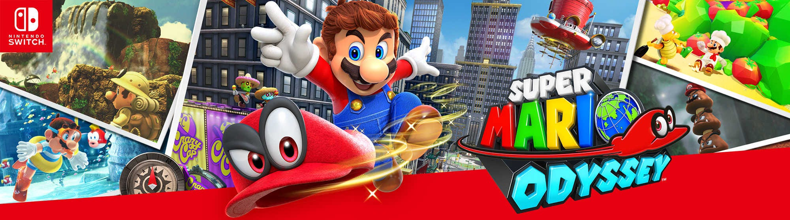

Extracting Models from Super Mario Odyssey
Disclaimer: You will need to source a usable NSP/XCI of Super Mario Odyssey yourself. This tutorial will not contain instructions on installing/setting up Yuzu or Ryujinx as it is assumed you have already done so.
You Will Need:
- A NSP/XCI of the game (NSP: Nintendo Submission Package. XCI: Game Cartridge Image)
- Yuzu/Ryujinx (for extracting the base game)
- Switch Toolbox (for extracting models and textures)
- Blender, or any modeling software of choice (for testing/viewing the model, creating the icons for submission)
- Model Checker (for checking any issues with the model. Note: It will not guarantee model approval.)
Extracting the Game:
For Yuzu:
- Ensure Super Mario Odyssey appears in the games list.
- Right-click the game and click Dump RomFS > Dump RomFS.
- A new window should appear asking how you would like the game dumped. Select "Full". Wait for the extraction to complete.
- Navigate to the "ObjectData" folder in the dumped game directory. Keep note of the directory for later.
For Ryujinx:
- Ensure Super Mario Odyssey appears in the games list.
- Right-click the game and select Extract Data > RomFS, then choose a location for the dump. Keep note of the directory for later.
Extracting and Converting the Models (Switch Toolbox):
- Extract the downloaded .ZIP archive called "Toolbox-Latest.ZIP". Inside the extracted archive, open "Toolbox.EXE".
- Go to File > Open (Folder), and navigate to the extracted RomFS of Super Mario Odyssey. Select the ObjectData folder and click "Select Folder".
- You should see a long list of .SZS files inside. These are packages containing models, textures, animations, and other files. Find the model you would like to extract and double-click on the respective .SZS file.
- Inside the .SZS, you should see a .BFRES file. Double-click on it to open your model in the viewport to the left. The "Models" folder is what we need to use.
- Click the + icon for the "Models" folder, then right-click the model underneath that folder. Click "Extract" and choose a spot for the model. Make sure to extract it as a .DAE file.
Importing the Model (Blender):
- Open Blender and go to File > Import > Collada (.dae) and select the extracted model.
- Once imported, scale the model down to a reasonable size (e.g., 0.01).
- Navigate to the "Shading" workspace. Assign textures to the model.